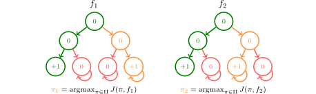

We present a general theoretical framework for designing efficient
algorithms for interactive imitation learning. We leverage this
framework to derive novel inverse reinforcement learning algorithms (one
model-free, one model-based), both of which come with strong performance
guarantees and compare favorably to multiple baselines empirically
across a wide set of continuous control environments.
The inverse reinforcement learning approach to imitation learning is a double-edged sword. On the one hand, it can enable learning from a smaller number of expert demonstrations with more robustness to error compounding than behavioral cloning approaches. On the other hand, it requires that the learner repeatedly solve a computationally expensive reinforcement learning (RL) problem. Often, much of this computation is wasted searching over policies very dissimilar to the expert's. In this work, we propose using hybrid RL — training on a mixture of online and expert data — to curtail unnecessary exploration. Intuitively, the expert data focuses the learner on good states during training, which reduces the amount of exploration required to compute a strong policy. Notably, such an approach doesn't need the ability to reset the learner to arbitrary states in the environment, a requirement of prior work in efficient inverse RL. More formally, we derive a reduction from inverse RL to expert-competitive RL (rather than globally optimal RL) that allows us to dramatically reduce interaction during the inner policy search loop while maintaining the benefits of the IRL approach. This allows us to derive both model-free and model-based hybrid inverse RL algorithms with strong policy performance guarantees. Empirically, we find that our approaches are significantly more sample efficient than standard inverse RL and several other baselines that require stronger assumptions on a suite of continuous control tasks.
Traditional inverse RL (IRL) is formulated as a two-player game with an adversary selecting a reward function in the outer loop, and a learner that optimizes this reward function to completion via reinforcement learning in the inner loop. Thus, the majority of time in IRL is spent in this inner loop searching over policies. However, because the expert doesn't need to be the optimal policy under the adversarially chosen reward, this can lead to a lot of wasted computation, as shown in the two trees below:
Note in the above tree MDP that the expert is not optimal under reward $f_1$ or $f_2$. Nevertheless, in computing the best response to the reward chosen in the outer loop, the learner needs to pay for the worst-case exploration complexity of RL — $O(\exp(H))$. Given our goal is merely to imitate the expert, this search procedure is needlessly expensive. Furthermore, given the best-response can change widely across iterations, this sort of procedure can introduce instability into the training process. The same set of concerns apply to algorithms that take a small no-regret step (e.g. GAIL) at each inner loop iteration: they need to explore the entire MDP at least once.
Recall that at heart, what we care about in IRL is competing with the expert. Thus, intuitively, as long as we can consistently compete with the expert in the inner loop — i.e. via an expert-competitive response rather than a best-response — we might hope that we can derive algorithms with strong performance guarantees. We can now formalize this intuition via a simple proof. We first define an Expert Relative Regret Oracle (ERROr).
Suppose we have some policy-selection algorithm $\mathbb{A}_{\pi}$ which produces a sequence of policies $\pi_{t+1} = \mathbb{A}_{\pi}(f_{1:t})$ for any sequence of reward functions $f_{1:t}$, we say the algorithm satisfies the $\mathsf{Reg}_{\pi}(T)$ expert-relative regret guarantee if $$\sum_{t=1}^T J(\pi_E, f_t) - J(\pi_t, f_t) \leq \mathsf{Reg}_{\pi}(T).$$ In words, this equation tells us that no matter what sequence of reward functions we face, on average, we perform almost as well as the expert. If you have an RL Theory background, this sort of performance difference should set of your spidey senses: most RL algorithms operate by minimizing upper bounds of it. We'll go through some examples of such algorithms in a bit but first, let us see how we can use an ERROr algorithm inside IRL. Let's assume we pick a sequence of reward functions $f_{1:T}$ via training a discriminator between learner and expert data. Then, via the ERROr property, we have that $\bar{\pi}$ (the mixture of $\pi_{1:T}$) satisfies $$\begin{aligned}J(\pi_E, r) - J(\bar{\pi}, r) &= \frac{1}{T} \sum_{t=1}^T J(\pi_E, r) - J(\pi_t, r) \\ &\leq \max_{f^{\star} \in \mathit{F}_r} \frac{1}{T} \sum_{t=1}^T J(\pi_E, f^{\star}) - J(\pi_t, f^{\star}) \\ &\leq \frac{1}{T} \sum_{t=1}^T J(\pi_E, f_t) - J(\pi_t, f_t) + \frac{\mathsf{Reg}_f(T)}{T}H \\ &\leq \frac{\mathsf{Reg}_{\pi}(T)}{T} + \frac{\mathsf{Reg}_f(T)}{T} H.\end{aligned}$$ If we use a no-regret reward selection algorithm such as online gradient descent, the second term goes to 0 as $T \to \infty$. In short, we only need to compete with the expert on average to ensure we learn a policy with strong performance.
By leveraging prior algorithms in hybrid RL (Ross and Bagnell (2012), Song et al. (2023),
Vemula et al. (2023)) that satisfy the ERROr property in the inner RL loop, we can
efficiently find strong policies without reward information. In
particular, we derive two hybrid inverse RL algorithms
with strong performance guarantees using this framework: a model-free
variant named HyPE (Hybrid Policy Emulation) and a
model-based variant named HyPER (Hybrid Policy Emulation
with Resets).
For example, we instantiate HyPE using the HyQ algorithm
from
Song et al. (2023) as the
inner RL algorithm as follows:
Correspondingly, we instantiate HyPER using the LAMPS
algorithm from
Vemula et al. (2023). We note that HyPER is equivalent to running the
FILTER
algorithm as follows:
We benchmark HyPE and HyPER against other
inverse RL baselines on locomotion tasks from D4RL and the MuJoCo suite.
Notably, neither of our algorithms requires the ability to reset
to specific states within the environment. To the best of our knowledge,
this is the highest performance achieved by an inverse RL algorithm on
antmaze, including those that require generative model
access to the environment.
We release all our code in the link below.
Juntao Ren*, Gokul Swamy*, Zhiwei Steven Wu, J. Andrew Bagnell, Sanjiban Choudhury
@misc{ren2024hybrid,
title = {Hybrid Inverse Reinforcement Learning},
author = {Juntao Ren and Gokul Swamy and Zhiwei Steven Wu and J. Andrew Bagnell and Sanjiban Choudhury},
year = {2024},
booktitle = {International Conference on Machine Learning},
}This template was originally made by Phillip Isola and Richard Zhang for a colorful ECCV project, and adapted to be mobile responsive by Jason Zhang. The code we built on can be found here.